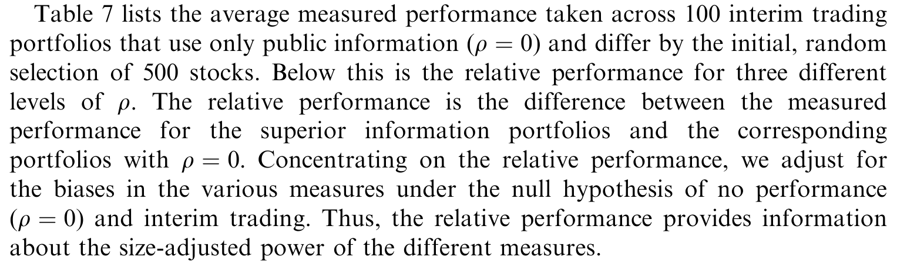
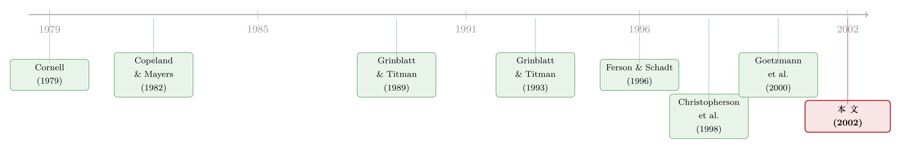

基金经理偷偷换了仓，你的「业绩尺子」就量错了
本文读的是 Ferson & Khang (2002, Journal of Financial Economics)：他们把「组合持仓」和「条件化信息」拼在一起，造了一把新的业绩尺子——条件权重度量 (conditional weight measure, CWM)。用它去量一批美国股票型养老金，原本「显著为正」的超额业绩，竟然消失成了「中性」。
1 一个看上去早就解决了的问题
衡量一只基金的业绩，听起来是金融学里最古老、最该被解决的问题之一。教科书的答案干净利落：把组合的收益对一个基准收益做回归，截距 alpha 就是业绩。这套收益法 (returns-based measure) 自 Jensen (1968) 起就是主流，好处也很实在——你只需要两列数据：组合的收益和基准的收益，连人家手里到底拿了哪些股票都不必知道。
可正因为「不必知道」，它也丢掉了一条最直接的线索：组合的持仓本身。
一个有私有信息的经理，会做什么？他会在自己认为「下个月要涨」的股票上加仓，在「要跌」的股票上减仓。于是，他的权重变化和这些股票随后的异常收益之间，应该是正相关的。Cornell (1979) 最早想到用这个协方差来度量业绩，Grinblatt & Titman (1993) 把它做成了一个成形的权重法 (weight-based measure)。
听上去，收益法和权重法不过是同一件事的两种算法，谁更顺手用谁。但本文要讲的，恰恰是这两条路在一个被长期忽视的地方分道扬镳——而且分得相当彻底。
2 张力：当经理在「两次观测之间」偷偷换仓
先把问题摆到台面上。假设我们每两个季度才观测一次收益，但经理每个季度都在交易。再假设这位经理毫无私有信息，他的业绩本该是中性的。
问题出在中间那个时点。半路上，公开信息更新了——比如利率变了、股息率变了。一个勤勉的经理会盯着这些公开信息 (public information) 调仓。如果预期收益是随公开信息时变的（这正是条件资产定价的核心假设），那么他在中间时点根据公开信息调出来的那一手，会让第二期的收益落在一个「被条件化过」的分布上。
于是，一个只会用公开信息、毫无真本事的经理，在收益法看来却像是「掌握了超额信息」。这就是本文命名的期中交易偏误 (interim trading bias)。
更要命的是：连条件收益法也躲不掉。Ferson & Schadt (1996) 把收益法放进条件框架（这是一大进步，可参见《会动的 beta：基金经理的择时本事，是真的，还是统计模型替他造出来的？》 里对时变 alpha/beta 的讨论），但只要它只能用「第一期期初」的信息做条件，就依然会把经理在期中的机械调仓误读成能力。Goetzmann et al. (2000) 给出过一个针对性的局部补丁——用模拟去逼近期中交易生成的多期收益——但那终究是补丁。
接着，一个自然的问题是：有没有一把尺子，天生就对期中交易免疫？
答案，正是权重法在条件框架下的样子。
3 识别的关键：为什么权重法对期中交易「天生免疫」
这是全文最漂亮的一步，值得慢慢看。
条件权重度量考察的，是经理在第一期期初的权重，与随后整段（两期）收益之间的条件协方差。注意这个细节：它锚定的是期初那一刻的持仓。如果经理在期初除了公开信息之外一无所知，那么这个条件协方差就是零——无论他在期中怎么折腾。
为什么？因为期中的调仓，是基于期中才出现的公开信息做的；它和「期初持仓 × 后续收益」这个协方差没有关系。期中交易这件事，在权重法的视野里根本不存在。于是它无法制造出虚假的业绩。
当然，天下没有白来的午餐。本文也坦白：如果经理真的有本事在期中靠超额信息加仓，权重法同样会对这部分视而不见——它只看期初权重，看不到期中的神来之笔。所以权重法是用一部分检验功效 (power) 去换无偏。这个取舍是不是划算，是个实证问题。本文的回答是：在他们的样本里，CWM 的精度并不比收益法差（哪怕是带条件信息的收益法），同时却少了期中交易偏误。取舍的天平，倒向了 CWM。
4 模型：从效用最大化到一个「条件协方差」
本文的度量不是凭直觉拍出来的，而是从一个单期效用最大化问题里推出来的。我们一步步看。
第一步：投资者在解什么。 一个初始财富 \(W_0\) 的投资者，在无风险资产和风险资产之间分配权重 \(w\)，最大化期末财富的期望效用：
$$ \max_{w}\; E\!\left[\, U\!\left(W_0(1+r_f) + W_0\, w' R^* \right) \,\middle|\, Z, S \,\right] $$
这里 \(r_f\) 是无风险利率，\(R^*\) 是风险资产超额收益向量，\(Z\) 是时点 0 的公开信息，\(S\) 是私有信息。私有信息的定义，就是「在给定 \(Z\) 的条件下，仍与 \(R^*\) 相关」的那部分。
第二步：一阶条件给出什么。 假设收益条件正态、投资者具有非递增绝对风险厌恶（Rubinstein, 1973 的定义），从最优化问题（详见 Khang, 1997）可以导出：
$$ E\!\left\{ w(Z,S)' \left( R^* - E(R^*\mid Z) \right) \,\middle|\, Z \right\} > 0 $$
由于括号里有一项均值为零，这个式子其实就是一个条件协方差：在公开信息 \(Z\) 给定时，一个有私有信息 \(S\) 的经理，其权重与各证券异常收益之间的协方差之和为正。如果他没有私有信息，这个和就是零。这就是 Grinblatt & Titman (1989b) 那个「协方差之和为正」结论的条件化版本。
第三步：引入基准权重。 直接用权重 \(w\) 在统计上不好处理——权重的水平可能是非平稳的（脚注里作者证明，买入持有策略下权重会走成 I(1) 过程）。于是引入一个落在公开信息集 \(Z\) 里的基准权重 \(w_b\)。因为 \(w_b\) 在给定 \(Z\) 时是常数，它不影响条件协方差：
$$ E\!\left\{ \left( w(Z,S) - w_b \right)' \left( R^* - E(R\mid Z) \right) \,\middle|\, Z \right\} > 0 $$
把 \(w_b\) 取成过去某期权重经买入持有更新后的值，差出来的就是权重变化——既平稳，又有清晰的经济含义：相对于「啥都不动」的偏离。
第四步：写成可估计的度量。 这就是本文的主角，时点 \(t\) 的条件权重度量：
其中基准权重 \(w_{bjtk} = w_{jt-k}\prod_{\tau=t-k+1}^{t}(1+r^*_{j\tau})/(1+r^*_{p\tau})\)，即把 \(t-k\) 期的真实持仓按买入持有滚动到 \(t\)。这样一来，基准是内部化的——拿经理自己过去的持仓做参照，问的是「相对于不交易，你的偏离创造了价值吗」。
5 一个被忽略的分解：业绩到底从哪儿来
本文还顺手做了一件很有用的事——把无条件权重度量拆开：
$$ \sum_{j=1}^{N} \mathrm{Cov}(\Delta w_j, r_j) = \sum_{j=1}^{N} E\{\mathrm{Cov}(\Delta w_j, r_j\mid Z)\} + \sum_{j=1}^{N} \mathrm{Cov}\big(E(\Delta w_j\mid Z),\, E(r_j\mid Z)\big) $$
左边是无条件权重度量 (unconditional weight measure, UWM)，接近 Grinblatt & Titman (1993)。右边第二项是平均的条件权重度量——真正的私有信息那部分。第三项则是机械交易：经理只是在追逐公开信息可预测的收益（比如序列相关、一月效应），并不需要任何真本事。
这个分解的妙处在于：一个不监控公开信息的投资者，照样该关心条件度量。因为它能把经理的主动收益拆成「私有信息」和「公开信息」两块——前者是你雇这位经理才买得到的东西，后者则可以拿去和「自己监控公开信息的成本」做比较。换句话说，条件化不只是为了无偏，它还回答了一个委托代理问题：你到底在为什么付管理费？
6 数据与结果：正的 alpha，是怎么蒸发的
数据。 本文用的是 Callan Associates 旗下 IMS 客户的 60 个美国国内股票型养老金组合，季度持仓与季度收益，区间 1984-12-31 至 1994-12-31。这批数据有几个难得之处：是单个组合而非多组合混在一起的复合数据；管理人被解雇/停业的组合也保留在样本里，因而对幸存者偏误有一定控制；新管理人入场时不做数据回填，缓解了选择偏误。组合市值从 $3.2 million 到 $1.5 billion，中位数 $78.9 million；持股数从 26 到 165 只，中位数 62；其中 22 个成长型、29 个价值型、1 个平衡型。成长型基金交易更频繁、更偏动量策略，价值型则相反——这种策略差异，恰好把几把尺子的脾气照得很清楚。
核心反转。 用收益法去量，这批养老金有正的超额收益，和以往文献（如 Coggin et al., 1993）一致。但一旦把条件信息放进权重法，业绩就变成中性了。
这正是全文的「反转」：先前那些「养老金跑赢大盘」的估计，很可能反映的是有偏的尺子，而非真实的能力。换一把对期中交易免疫、又能剔除公开信息机械交易的尺子，超额业绩就蒸发了。
为了把期中交易偏误从「理论隐患」坐实成「真实数字」，本文做了模拟实验：构造一批毫无私有信息、却在期中按公开信息调仓的人工组合，再看各度量给出的平均业绩。结果如下表所示——收益法（包括条件收益法）系统性地把这些「假业绩」记成了正值，而 CWM 维持在零附近。

Table 7: lists the average measured performance taken across 100 interim trading
7 文献脉络
这条线索的演进，可以拎成两股绳，最后在本文里拧到一起。
一股是权重法：Cornell (1979) 首倡用持仓权重度量交易策略业绩，Copeland & Mayers (1982) 改进后用于 Value Line 排名，Grinblatt & Titman (1993) 把它做成成熟的共同基金权重度量，背后是 Grinblatt & Titman (1989b) 那个「私有信息下协方差之和为正」的理论支柱。
另一股是条件化：Ferson & Schadt (1996) 把收益法搬进条件框架，发现结论会变；Christopherson, Ferson & Glassman (1998a) 进一步用条件收益法研究业绩持续性。但条件收益法仍栽在期中交易上，Goetzmann et al. (2000) 给出过部分补救。

本文 (2002) 站的位置，是把这两股绳第一次系紧：权重 + 条件化。它既继承了权重法对期中交易的天然免疫，又借条件化剔除了公开信息驱动的机械交易，还顺带提供了一个把私有/公开信息分开的分解。Eckbo & Smith (1998) 已经用过这个度量（其雏形见 Khang, 1997）去研究内幕交易，可见它的适用面不止于基金评价。
8 评论与延伸（Q&A + 研究方向）
(a) 几个可能的疑问
Q：CWM 既然对期中交易免疫，是不是就「全面优于」收益法？
不是。免疫是有代价的：经理若真在期中靠超额信息加仓，CWM 也看不见这部分，所以它牺牲了一部分检验功效。本文的论点不是「CWM 无敌」，而是在这批数据里，它的精度并不比（条件）收益法差，却少了偏误，因此取舍上更划算。这是一个实证判断，不是定理。
Q：CWM 与无条件权重度量（Grinblatt-Titman）的本质区别是什么？
在于「以谁为条件」。无条件版本里，经理只要追逐公开信息可预测的收益（序列相关、一月效应等），就会显出正业绩——本文 Eq.(4) 的第三项把这块「机械交易」单独拎了出来。条件版本把收益对公开信息 \(Z\) 条件化后，这块就被扣掉了，剩下的才是私有信息。
Q：基准权重用「买入持有」滚动，而不是直接用滞后权重，差在哪？
Grinblatt & Titman (1993) 用滞后权重，隐含假设了一个再平衡策略。本文用买入持有，测的是「相对于完全不交易的偏离」，且权重水平非平稳、差分才平稳，买入持有差分在统计上更干净。
Q：估计为什么要套进 GMM，而不是直接跑 OLS？
因为 Eq.(10)、(12) 里有权重乘收益的项，误差天然非正态、且可能有任意形式的条件异方差。GMM 不需要正态假设，标准误能容纳这些异方差，还能算出 CWM 与 UWM 之间的协方差——这对给「两者之差」（即分解）算标准误是必需的。附录证明了点估计其实等价于分步 OLS，但全系统结构给了正确的标准误。
Q：「正业绩蒸发」会不会只是因为养老金真的没本事，而非尺子的功劳？
两种解释本文都给了证据去区分。模拟实验（表 7）直接证明：哪怕构造一批确定无私有信息、只做期中机械调仓的组合，收益法也会把它们记成正业绩，而 CWM 记成零。所以「正业绩」至少有一部分是偏误造的，而非纯粹的能力缺失。
Q：这套方法对持仓数据的要求是不是很苛刻？
是它的软肋。它要求观测到组合在每个时点的完整持仓向量，而多数公开渠道（如 SEC 申报）拿到的是复合、低频、且有滞后的数据。本文用的是单只组合的季度持仓，已属难得；滞后 \(k\) 期才视为公开信息这一处理，正是为了应对「持仓何时算公开」的不确定。
(b) 几个可能的研究问题与提案
1. 把 CWM 搬到公司债基金。 【经济故事】债券基金经理在两次报告之间的调仓，往往是对利率、信用利差等公开信息的反应——期中交易偏误在固定收益里只会更严重。把 CWM 用到公司债组合，能直接检验「债基的正 alpha 有多少是尺子幻觉」。 【可行性】中。难点在持仓频率与债券逐券收益的匹配；可借 TRACE 成交价构造债券异常收益，持仓走 N-PORT。识别上 CWM 的免疫性质照搬即可。（与《评估政府债券基金业绩：当经理偷偷在月中换了仓》 的随机贴现因子路线可以互为对照。）
2. 外资持有人 vs. 本地机构的 CWM 对比。 【经济故事】外资常被指「信息劣势」。若用 CWM 把外资机构的私有信息那一块单独估出来，再与本地机构比，就能避开收益法里因外资换仓节奏不同而生的偏误。 【可行性】中。需要分国别、可识别投资者类型的持仓面板（如韩国、台湾的交易所级数据）。识别清晰，数据获取是主要门槛。
3. 用 Eq.(4) 的分解给「主动份额」定价。 【经济故事】本文的三项分解里，「公开信息」那一块本质上是机械的因子暴露，「私有信息」那一块才是真本事。把这个分解和近年的主动份额、因子拥挤度文献对接，可问：投资者到底为哪一块付了费？ 【可行性】高。共同基金持仓（Thomson/CRSP）足够；条件变量用标准的股息率、利差等即可。是一个数据现成、识别干净的实证题。
4. 期中交易偏误的「频率敏感性」实验。 【经济故事】偏误大小应随「观测频率与交易频率之差」放大。系统地变动观测频率（季→月→日），量出偏误如何随之膨胀，能给「业绩评价该多久看一次」一个量化指引。 【可行性】高。纯模拟 + 现成持仓即可复现，无需新数据。
9 我的判断
本文的贡献是干净而持久的：它指出了一个连「条件收益法」都躲不掉的偏误，并给出了一把结构上免疫的尺子，还附带一个能把私有/公开信息分开的分解。把养老金的「正 alpha」做成「中性」，这个反转本身就足够有分量——它提醒我们，很多业绩文献的结论，可能是尺子而非能力的产物。
但有两处值得保留态度。其一是功效的代价：CWM 对真实的期中能力同样视而不见，本文说在自己样本里精度不输收益法，可这高度依赖于这批养老金的交易模式（季度、低换手），换到高频或衍生品密集的策略上，结论未必成立。其二是线性近似的代价：Eq.(7)、(8) 都假设条件期望和条件协方差是 \(Z\) 的线性函数，作者诚实地承认忽略了模型设定误差与信息集不完备带来的额外误差，并坦言「若把这些误差算进标准误，估计精度大概会下降」。这意味着论文报告的「精度不输收益法」可能偏乐观。
后续我最想看到的，是把这把尺子放到持仓数据更频繁、交易更密集的环境里去压力测试——比如对冲基金或债券基金——看 CWM 的无偏性与功效损失，究竟在多大程度上还能两全。
参考文献
- Christopherson, J., Ferson, W., Glassman, D. (1998a). Conditioning manager alphas on economic information: another look at the persistence of performance. Review of Financial Studies 11, 111–142.
- Coggin, T., Fabozzi, F., Rahman, S. (1993). The investment performance of U.S. equity pension fund managers. Journal of Finance 48, 1039–1056.
- Copeland, T., Mayers, D. (1982). The value line enigma (1965–1978): a case study of performance evaluation issues. Journal of Financial Economics 10, 289–321.
- Cornell, B. (1979). Asymmetric information and portfolio performance measurement. Journal of Financial Economics 7, 381–390.
- Eckbo, B., Smith, D. (1998). The conditional performance of insider trades. Journal of Finance 53, 467–498.
- Ferson, W., Schadt, R. (1996). Measuring fund strategy and performance in changing economic conditions. Journal of Finance 51, 425–461.
- Goetzmann, W., Ingersoll, J., Ivkovic, Z. (2000). Monthly measurement of daily timers. Journal of Financial and Quantitative Analysis 35, 257–290.
- Grinblatt, M., Titman, S. (1989b). Portfolio performance evaluation: old issues and new insights. Review of Financial Studies 2, 393–421.
- Grinblatt, M., Titman, S. (1993). Performance measurement without benchmarks: an examination of mutual fund returns. Journal of Business 60, 97–112.
- Hansen, L. (1982). Large sample properties of the generalized method of moments estimators. Econometrica 50, 1029–1054.
- Jensen, M. (1968). The performance of mutual funds in the period 1945–1964. Journal of Finance 23, 389–416.
- Khang, K. (1997). Performance measurement using portfolio weights and conditioning information. Unpublished Ph.D. Dissertation, University of Washington.
- Rubinstein, M. (1973). A comparative statics analysis of risk premiums. Journal of Business 46, 605–615.